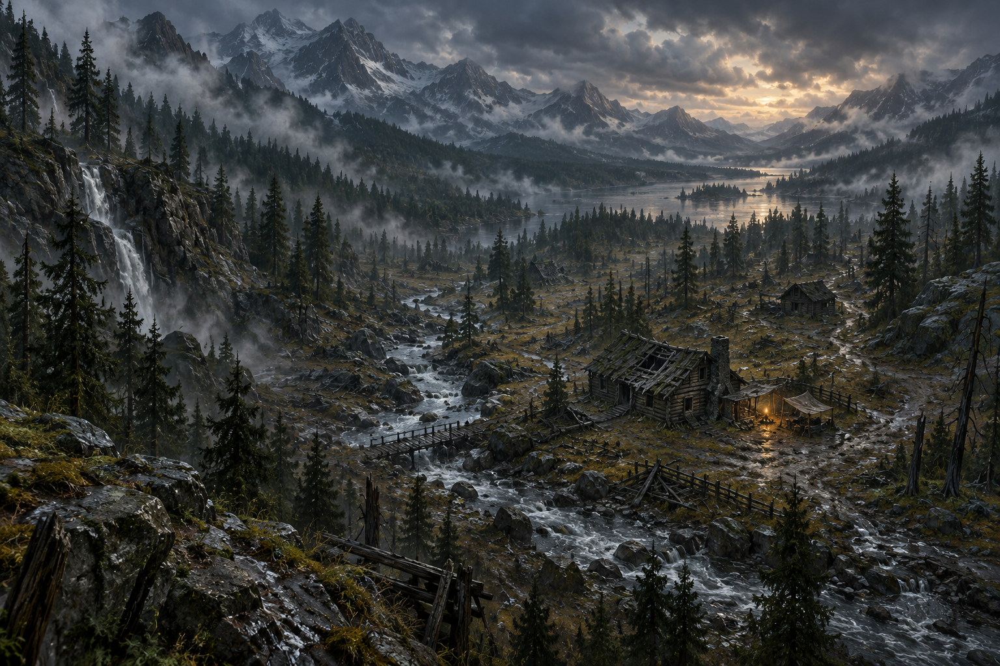

找来的材料，会留下痕迹。
搜过的木屋、用过的物资与建起的营地，都属于同一片山谷。雨会淋湿身体，低温、饥渴与营火相互影响，每次出门都要考虑回程。
AFTER THE RAIN / OPEN WORLD SURVIVAL
留住一点火，等山谷再亮起来。
雨、体温与饥渴，改变每一步的分量。
从空营地出发，带着找到的东西回来。

ORIGINAL DIRECTION SAMPLE / 09
搜寻材料 → 避雨取暖 → 处理饮水 → 发出求救 → 在营地等到天亮
点击画面：WASD / 方向键移动 · E 互动 · 空格暂停
木材 0 · 布料 0 · 零件 0
先搜寻木材、布料与零件。在雨来之前搭起庇护所，让营地有火、有水。
搜过的木屋、用过的物资与建起的营地，都属于同一片山谷。雨会淋湿身体，低温、饥渴与营火相互影响，每次出门都要考虑回程。
原创本地山谷，以短时间天气周期呈现搜寻、制作、补给与求救。身体需求实际运行；暂停、离线与页面暂离时世界停止变化。完整旅程使用同一套移动与生存规则。
学习物资、制作与身体需求怎样共同改变探索选择。原作是回合制的开放世界生存游戏；这里采用实时短样例。场景插画与游戏物件为本版原创，不使用原作代码或素材。
Cataclysm: DDA 官方开源项目 ↗参考汇总 →TEN DIFFERENT REASONS TO PLAY
十个已完成方向，各自保留独立现场。原有 107 个玩法形式与 116 个入口仍可从玩法库进入。